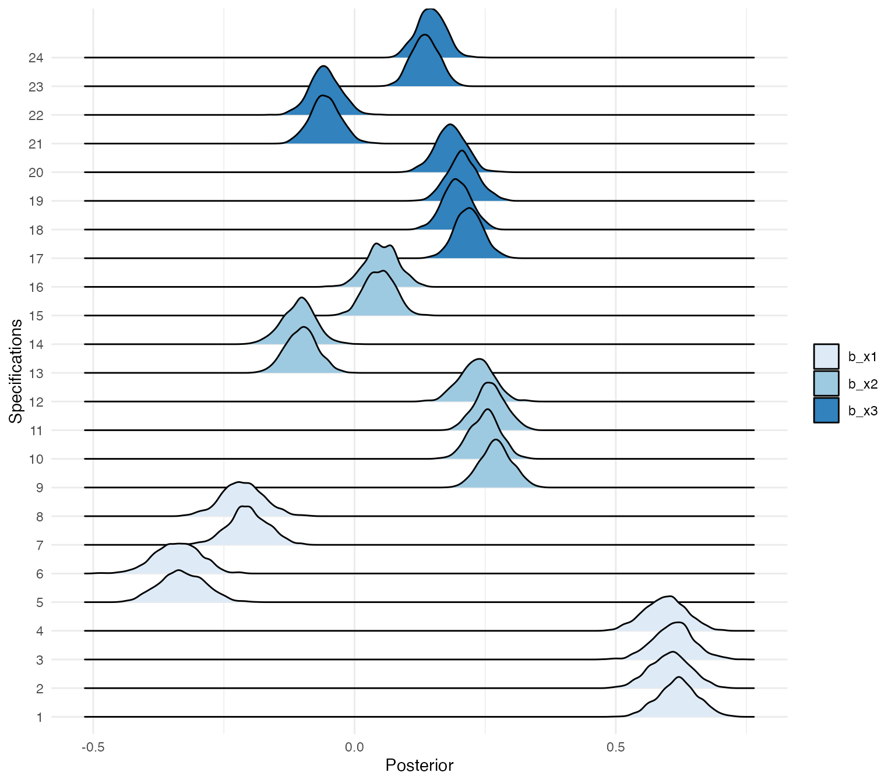
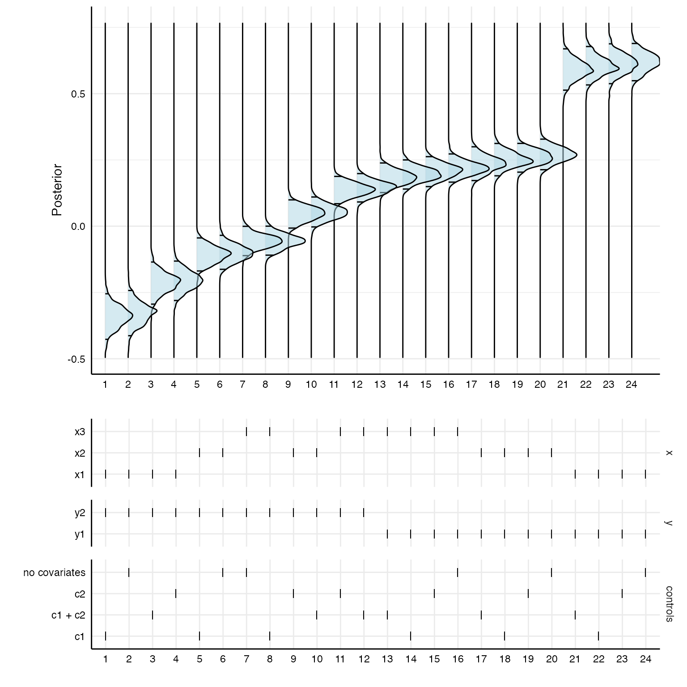

This vignette shows how one can incorporate Bayesian modeling using
the package brms in specr. When we fit a model
with brms, the package actually calls Rstan in the
background, which, in turn, is an R interface to the statistical
programming language Stan. Stan is built in the programming
language C++ and models have to be compiled using C++ to be run. This is
all taken care of by brms, so you just need to run brm(…)
to fit any model. brms uses a syntax for specifying model
formulae that is based on the syntax of the commonly known
lme4 package (for multilevel modeling). The comparatively
easy syntax of brms is then converted into Stan code
automatically.
That said, since the models have to be compiled in C++, you need to
set up your computer so that it can actually use C++. This has to be
done only once, before installing brms. Unfortunately, as almost always,
how you install C++ depends on your operating system. Check this
vignette to if you have problems installing brms.
We are also loading the library furrr as we want to
parallelize the computations.
library(tidyverse)
library(specr)
library(brms)
library(broom.mixed)
library(ggridges)
library(furrr)Setting up custom functions
Although you can simply pass the function brm to
setup and run specr()with
workers = 1 without any specific custim function, it
usually make sense to set up some custom model fitting and extraction
functions to make sure specr() does exactly what we
want.
For example, I would suggest to create a custom model fitting
function and specify relevant parameters for the Bayesian models. Here,
I switch off parallel processing as I want to do this via
specr() (i.e., setting cores = 1 in
brm). I also reduce the number of chains to 1 to speed up
the fitting process (but we can bump this up if we want). This custom
function also allows me to load brms itself and
broom.mixed, which provides the tidy function to extract
parameters from the brm.fit object.
Furthermore, I also create a custom fit extract function. Most
importantly, I add the full brms.fit object to the
glance output. This way, we can later access the entire
object in order to e.g., extract posterior distributions or other
aspects of the Bayesian models.
# Customized function, not necessary if standard values are to be used
brm_new <- function(formula, data) {
brm(formula, data,
silent = 2, # Don't print progress
refresh = 0, # Remove message (not necessary, but nicer in the output)
cores = 1, # set cores to 1 to not interfere with `furrr`
chains = 1) # I just set this here to reduce computing time, can be higher, of course
}
# New fun2, fit extract function
glance_brm <- function(x) {
fit2 <- broom::glance(x)
fit2$full_model <- list(x) # add full model
return(fit2)
}
# Setting up specifications
specs <- setup(data = example_data,
x = c("x1", "x2", "x3"),
y = c("y1", "y2"),
model = "brm_new",
controls = c("c1", "c2"),
fun2 = glance_brm)
# Check specs
summary(specs)
#> Setup for the Specification Curve Analysis
#> -------------------------------------------
#> Class: specr.setup -- version: 1.0.0
#> Number of specifications: 24
#>
#> Specifications:
#>
#> Independent variable: x1, x2, x3
#> Dependent variable: y1, y2
#> Models: brm_new
#> Covariates: no covariates, c1, c2, c1 + c2
#> Subsets analyses: all
#>
#> Function used to extract parameters:
#>
#> function(x) broom::tidy(x, conf.int = TRUE)
#> <environment: 0x7ff4590d15b8>
#>
#>
#> Head of specifications table (first 6 rows):
#> # A tibble: 6 × 6
#> x y model controls subsets formula
#> <chr> <chr> <chr> <chr> <chr> <glue>
#> 1 x1 y1 brm_new no covariates all y1 ~ x1 + 1
#> 2 x1 y1 brm_new c1 all y1 ~ x1 + c1
#> 3 x1 y1 brm_new c2 all y1 ~ x1 + c2
#> 4 x1 y1 brm_new c1 + c2 all y1 ~ x1 + c1 + c2
#> 5 x1 y2 brm_new no covariates all y2 ~ x1 + 1
#> 6 x1 y2 brm_new c1 all y2 ~ x1 + c1Estimating the models
Because we are estimating 24 Bayesian models, it makes sense to
parallelize this process. We hence again set up
furrr_options and then specify the number of workers we
want to use. Here, I am using 4 cores.
# Specify furrr_options
opts <- furrr_options(
seed = TRUE,
globals = list(brm_new = brm_new, glance_brm = glance_brm),
packages = c("brms", "broom.mixed", "broom")
)
# Specify future session
plan(multisession, workers = 4)
# Run analysis with furrr_options
results <- specr(specs, .options = opts, .progress = TRUE)Now we can again summarize and plot our results.
# Summarize and plot results
summary(results)
#> Results of the specification curve analysis
#> -------------------
#> Technical details:
#>
#> Class: specr.object -- version: 1.0.0
#> Cores used: 4
#> Duration of fitting process: 2.852 sec elapsed
#> Number of specifications: 24
#>
#> Descriptive summary of the specification curve:
#>
#> median mad min max q25 q75
#> 0.17 0.25 -0.34 0.62 -0.07 0.25
#>
#> Descriptive summary of sample sizes:
#>
#> median min max
#> 1000 1000 1000
#>
#> Head of the specification results (first 6 rows):
#>
#> # A tibble: 6 × 18
#> x y model controls subsets formula effect component group estimate
#> <chr> <chr> <chr> <chr> <chr> <glue> <chr> <chr> <chr> <dbl>
#> 1 x1 y1 brm_new no covari… all y1 ~ x… fixed cond NA 0.62
#> 2 x1 y1 brm_new c1 all y1 ~ x… fixed cond NA 0.6
#> 3 x1 y1 brm_new c2 all y1 ~ x… fixed cond NA 0.61
#> 4 x1 y1 brm_new c1 + c2 all y1 ~ x… fixed cond NA 0.59
#> 5 x1 y2 brm_new no covari… all y2 ~ x… fixed cond NA -0.33
#> 6 x1 y2 brm_new c1 all y2 ~ x… fixed cond NA -0.34
#> # … with 8 more variables: std.error <dbl>, conf.low <dbl>, conf.high <dbl>,
#> # fit_algorithm <chr>, fit_pss <dbl>, fit_nobs <dbl>, fit_sigma <dbl>,
#> # fit_full_model <list>
plot(results, choices = c("x", "y", "controls"))
Again, the coefficients are median estimates from the posterior and their respective 95% HDIs.
Inspecting specific models
Because we kept the entire brms models in our result data set, we can
explore specific models using the pull function.
# Pull entire models from the listed vector
models <- results %>%
as_tibble %>%
pull(fit_full_model)
# Summarize e.g., the first model
summary(models[[1]])
#> Family: gaussian
#> Links: mu = identity; sigma = identity
#> Formula: y1 ~ x1 + 1
#> Data: data (Number of observations: 1000)
#> Draws: 1 chains, each with iter = 2000; warmup = 1000; thin = 1;
#> total post-warmup draws = 1000
#>
#> Population-Level Effects:
#> Estimate Est.Error l-95% CI u-95% CI Rhat Bulk_ESS Tail_ESS
#> Intercept -1.10 0.04 -1.17 -1.03 1.00 906 836
#> x1 0.62 0.04 0.55 0.69 1.00 835 545
#>
#> Family Specific Parameters:
#> Estimate Est.Error l-95% CI u-95% CI Rhat Bulk_ESS Tail_ESS
#> sigma 1.14 0.03 1.09 1.19 1.00 1005 596
#>
#> Draws were sampled using sampling(NUTS). For each parameter, Bulk_ESS
#> and Tail_ESS are effective sample size measures, and Rhat is the potential
#> scale reduction factor on split chains (at convergence, Rhat = 1).From these model fit objects, we can also extract posterior distributions for the parameters of interest and stort them in one data frame.
posteriors <- results %>%
as_tibble %>%
pull(fit_full_model) %>%
map(function(x) as_tibble(as_draws_df(x))[, 2] %>%
gather(key, value)) %>%
bind_rows(., .id = "id")
# First 10 draws from the first specification for predictor `x2`
head(posteriors, n = 10)
#> # A tibble: 10 × 3
#> id key value
#> <chr> <chr> <dbl>
#> 1 1 b_x1 0.610
#> 2 1 b_x1 0.645
#> 3 1 b_x1 0.667
#> 4 1 b_x1 0.644
#> 5 1 b_x1 0.625
#> 6 1 b_x1 0.554
#> 7 1 b_x1 0.632
#> 8 1 b_x1 0.580
#> 9 1 b_x1 0.617
#> 10 1 b_x1 0.624Plotting posterior distributions for all specifications
Using the ggridges package, we can plot the posterior
distributions of the different specifications.
posteriors %>%
mutate(id = factor(id, levels = 1:24)) %>%
ggplot(aes(x = value, y = id, fill = key)) +
geom_density_ridges() +
scale_fill_brewer(palette = "Blues") +
theme_minimal()+
labs(x = "Posterior",
y = "Specifications",
fill = "")
Of course, the posterior distributions are not sorted in any way. With a bit of data wrangling, we can create a specification curve consisting of posterior distributions.
# First panel
p1 <- results %>%
as_tibble %>%
mutate(id = as.character(1:nrow(.))) %>%
arrange(estimate) %>%
mutate(specifications = factor(as.character(1:nrow(.)),
levels = c(1:24))) %>%
left_join(posteriors) %>%
ggplot(aes(x = value, y = specifications)) +
stat_density_ridges(quantile_lines = TRUE,
quantiles = c(0.025, 0.975),
alpha = .5,
fill = "lightblue",
color = "black") +
coord_flip() +
theme_minimal() +
labs(x = "Posterior", y = "") +
theme(strip.text = element_blank(),
axis.line = element_line("black", size = .5),
legend.position = "none",
panel.spacing = unit(.75, "lines"),
axis.text = element_text(colour = "black"))
# Second panel
p2 <- results %>%
as_tibble %>%
arrange(estimate) %>%
mutate(specifications = factor(as.character(1:nrow(.)),
levels = c(1:24))) %>%
gather(key, value, c("x", "y", "controls")) %>%
mutate(key = factor(key, levels = c("x", "y", "controls"))) %>%
ggplot() +
geom_point(aes(x = specifications,
y = value),
shape = 124,
size = 3.35) +
theme_minimal() +
facet_grid(.data$key~1, scales = "free_y", space = "free_y") +
theme(
axis.line = element_line("black", size = .5),
legend.position = "none",
panel.spacing = unit(.75, "lines"),
axis.text = element_text(colour = "black"),
strip.text.x = element_blank()) +
labs(x = "", y = "")
# Combine
plot_grid(p1, p2,
ncol = 1,
align = "hv",
axis = "tblr",
rel_heights = c(3, 2))
At the end of our analysis, it makes sense to explicitly close multisession workers by switching the plan back to sequential.
plan(sequential)